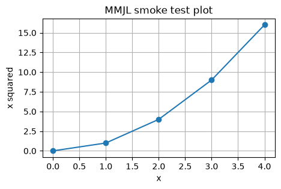

**Multimodal Jupy Logger HTML Timeline** This log file: timelines/timeline.html Timestamp: 1783862244574_2026-07-12T091724574-0400 Machine, user, etc.: BLACK-MACHINE bball@BLACK-MACHINE --- --- Begin Timeline or Other Log ---
1783856703497_2026-07-12T074503497-0400 — text — text/markdown
# Smoke Markdown note This text was logged with `%%jupy_log`. It should appear in the manifest and exported timelines.
1783862106474_2026-07-12T091506474-0400 — text — text/x-python
pin_message = "pin captures input and output" print(pin_message)
1783862106492_2026-07-12T091506492-0400 — text — text/plain
pin captures input and output
1783862108645_2026-07-12T091508645-0400 — text — text/x-python
named_message = "label alone behaves like pin" print(named_message)
1783862108669_2026-07-12T091508669-0400 — text — text/plain
label alone behaves like pin
1783862112120_2026-07-12T091512120-0400 — text — text/x-python
quiet_value = sum([1, 2, 3, 4])
print("This output should show in Jupyter, but not be logged by --pin-input.")
1783862114129_2026-07-12T091514129-0400 — text — text/plain
This output should be logged, but the input should not be logged.
1783862114145_2026-07-12T091514145-0400 — text — text/plain
42
1783862177883_2026-07-12T091617883-0400 — text — text/x-python
import matplotlib.pyplot as plt
xs = [0, 1, 2, 3, 4]
ys = [x * x for x in xs]
plt.figure(figsize=(5, 3))
plt.plot(xs, ys, marker="o")
plt.title("MMJL smoke test plot")
plt.xlabel("x")
plt.ylabel("x squared")
plt.grid(True)
plt.show()
1783862181071_2026-07-12T091621071-0400 — text — text/plain
<Figure size 500x300 with 1 Axes>
1783862181085_2026-07-12T091621085-0400 — image — image/png

1783862221580_2026-07-12T091701580-0400 — text — text/x-python
print("This cell intentionally raises an exception.")
raise ValueError("Expected MMJL smoke-test exception")
1783862222184_2026-07-12T091702184-0400 — text — text/plain
This cell intentionally raises an exception.
1783862222228_2026-07-12T091702228-0400 — text — text/plain
Traceback (most recent call last):
File "D:\David\my_repos_dwb\multimodal-jupy-logger\.venv_mmjl_test\Lib\site-packages\IPython\core\interactiveshell.py", line 3748, in run_code
exec(code_obj, self.user_global_ns, self.user_ns)
~~~~^^^^^^^^^^^^^^^^^^^^^^^^^^^^^^^^^^^^^^^^^^^^^
File "C:\Users\bball\AppData\Local\Temp\ipykernel_22732\2174790293.py", line 2, in <module>
raise ValueError("Expected MMJL smoke-test exception")
ValueError: Expected MMJL smoke-test exception